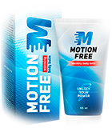

UNIKALI PRIEMONĖ SĄNARIŲ IR NUGAROS LIGOMS GYDYTI
kinų medicinos paslaptys
PRIEMONĖ SĄNARIŲ SKAUSMUI GYDYTI
motion free
Unikali priemonė sąnarių ir nugaros ligų gydymui su itin veiksmingu poveikiu!
- Ilgesnis poveikis
- Iš karto malšina skausmą
- Nekenkia organizmui
- Klinikiniais tyrimais įrodytas poveikis
PASKUBĖKITE UŽSISAKYTI
Pasiūlymas baigiasi po:
ŠIO TEPALO KLINIKINIŲ TYRIMŲ REZULTATAI IŠ TIESŲ ĮSPŪDINGI
Plačiai žinoma, kad kinų medicina išsiskiria iš kitų tradicinių gydymo metodų. Kinijoje as specialist yra ypatingas būdas padaryti savo kūną sveikesniu. Kinų as specialist suranda ligos priežastį ir gydo nekenkiant visai kūno sistemai. Gydymas žolelėmis yra pats seniausias kinų gydymo metodas, naudojamas artrozės ir osteochondrozės gydymui.
Ilgi klinikiniai tyrimai buvo taikomi Motion Free Pekino (Kinija) ir Stokholmo (Šveicarija) medicinos laboratorijose 2013 m. Dalyvavo daugiau nei 1000 vyrų ir moterų, kenčiančių nuo įvairių nugaros ir sąnarių ligų. Jie naudojo tepalą Motion Free dvi savaites. Netgi specialistai buvo nustebinti tokių rezultatų!
Daugumai pacientų po 1-3 dienų po naudojimo išnyko ūmus ir įkyrus skausmas. Daugiau nei 70% dalyvių pavyko pasiekti puikių rezultatų gydant chroniškas nugaros ir sąnarių ligas.
Naudingas priemonės poveikis buvo pastebėtas visuose atvejuose be išimties. Nė viena iš esamų ortopedinių priemonių neturi tokio stipraus poveikio!

Profesorius Lao Chan
Pekino Medicinos laboratorijos farmacijos specialistas
KLINIKINIAIS TYRIMAIS ĮRODYTA, KAD PRIEMONĖ MOTION FREE PADEDA IŠGYDYTI TOKIAS LIGAS KAIP:
- Radikulitas ir osteochondrozė
- Reumatas
- Artritas
- Išialgija
- Pečių ir alkūnių periarteritas
- Tarpmentinių nervinių mazgų skausmai
- Kelių artrozė
- Užkalkėjimas
- Padų sukietėjimas
- Riebalų audinio perteklius kaklo slankstelių zonoje c7
- Pasislinkęs slankstelio diskas (išvarža)
- Sužeidimai, skilimai, išnarinti kaulai
- Skausmas nugaros apačioje, kojose
- Oro permainų sukeltas skausmas
- Galūnių nutirpimas
- Raumenų spazmai, patempti raumenys
Ir kitos nugaros, krūtinės ir galūnių ligos
Produktas Motion Free ne tik numalšina skausmą, bet ir veikia šių ligų priežastis, todėl jis turi ilgalaikį sveikatą gerinantį poveikį.
UNIKALIOS MOTION FREE SAVYBĖS
- Greitai pašalina skausmą (ūmų ir nuolatinį)
- Gerina kraujo apytaką
- Pašalina patinimą
- Gerina medžiagų apykaitą
- Vėl suteikia sąnariams judrumo
- Didina audinių elastingumą
- Suteikia kaulams ir sąnariams svarbiausių mikroelementų
- Užkertą kelią komplikacijoms ir tolesniam ligų vystymuisi
- Turi stiprų priešuždegiminį poveikį
Motion Free pagamintas pagal tradicinį natūralų receptą
Motion Free yra ateities produktas, sujungiantis veiksmingiausius mokslo pasiekimus. Jį rekomenduojama naudoti kaip pagrindinę priemonę sąnarių ligoms gydyti.
Ši priemonė veikia lokaliai, prasiskverbia tiesiai į sąnarių kapsulę ir visiškai pašalina ligą. Unikali Motion Free sudėtis regeneruoja pažeistą kremzlę, malšina skausmą ir uždegimus bei atkuria normalų sąnarių funkcionavimą.
Motion Free yra tikrai unikali ir veiksminga priemonė, neturinti analogų
- Jokių neigiamų padarinių
- Užtikrina ilgalaikį poveikį
- Nesukelia nepatogumo ir nemalonių pojūčių
- Nebrangus, paprastas naudoti
- Sertifikuotas pagal griežčiausius ISO ir GMP standartus

2017 m. priemonė Motion Free buvo populiariausias produktas JAV ir Europos šalyse! Vien per pirmąjį 2017 metų pusmetį 2017 jį įsigijo daugiau nei 3 milijonai europiečių. Jei tai padeda kitiems, padės ir jums!
Ką specialistai sako apie Motion Free?
Priemonė Motion Free neabejotinai nusipelno išskirtinio dėmesio. Tai ateities gydomoji priemonė. Patogumas, prieinamumas ir veiksmingumas nurungia visus konkurentus.
Nepaisant to, kad šis tepalas Lietuvos rinkoje pasirodė gana neseniai, jis jau yra įtraukiamas į gydymo programas geriausiose šalies klinikose, kurios specializuojasi ties ortopedinėmis ligomis.
Mano pastebėjimai: po to, kai pradėjau rekomenduoti Motion Free savo pacientams, gydymo dinamika pagerėjo beveik dvigubai. Tai itin geras sėkmės rodiklis, kuris įrodo kaip puikiai veikia ši priemonė.
Pirkėjų atsiliepimai
6 mėnesius nejaučiu nugaros skausmo!
"Gera ir nebrangi priemonė! Po tarnybos kariuomenėje pradėjau jausti skausmus nugaros apačioje. Išbandžiau įvarius vaistus ir liaudiškus metodus, bet jie nepadėjo. Skausmai ypač suaktyvėdavo kai praleisdavau ilgą laiką sėdėdamas. Žmona man nupirko Motion Free ir pabaigiau visą gydymo kursą. Dabar jau 6 mėnesius neturiu problemų dėl nugaros. Esu labai laimingas. Žmona parekomendavo jį savo kolegei, jai taip pat padėjo. Duočiau 5 žvaigždutes iš penkių."
Motion Free padeda labiau nei išreklamuotos tabletės!
"Mane maloniai nustebino Motion Free poveikis. Atvirai pasakius, nepasitikėjau tais stebuklingais liaudiškais metodais, bet dabar mano nuomonė visiškai pasikeitė. Jie dar geriau padeda negu išreklamuotos tabletės. Skausmas išnyko beveik iš karto. Pabaigiau 2 pilnus gydymo kursus, kaip rekomenduojama, ir dabar jaučiuosi puikiai"
Viską išbandžiau - injekcijas, kremus, liaudies metodus. Bet man padėjo tik Motion Free.
"Ši priemonė yra nuostabi! Turėjau problemų dėl tinimo ir kojų skausmo. Netgi mano specialistas nežinojo kas man yra. Viską išbandžiau - injekcijas, kremus, liaudies metodus. Bet man padėjo tik Motion Free. Jau po kelių dienų pamačiau akivaizdžius pokyčius. Nustojo skaudėti kojas. Dabar viskas normalizavosi, jau visą mėnesį nebejaučiu jokių simptomų. Visiems rekomenduoju!"
Jaučiuosi 10 metų jaunesnis!
"Tai kažkas nepaprasto! Nemaniau, kad Motion Free gali taip veikti! Pasiskolinau Motion Free iš draugo ir jaučiuosi atjaunėjęs 10 metų. Jokių skausmų, jokio nemalonaus jausmo, galiu laisvai judėti. Ilgai taip nesijaučiau. Tai geriausia priemonė tiems, kurie skundžiasi nugaros problemomis."
Kaip naudoti Motion Free
-

Tepkite ant sausos odos ir įtrinkite į odą kol visiškai įsigers
-

Naudokite 2-3 kartus per dieną
-

Neplaukite vandeniu 1 valandą po naudojimo